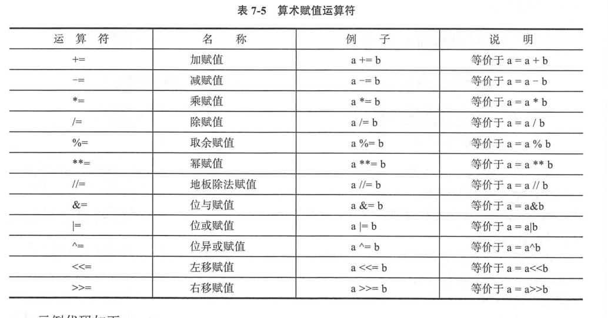

Contents
1.11. 内置常量与逻辑运算符、比较运算符¶
1.11.1. 内置常量¶
None 的意义是”无“，常用来表示没有值的对象
python中逻辑假包括：False、None、0、空字符串、（）空元祖、[]空列表、和{}空字典，其余的任何值都视为真
布尔 False
null 类型 None
整型 0
浮点型 0.0
空字符串 ''
空列表 []
空元组 ()
空字典 {}
空集合 set()
代码示例
In [2]: if 0:
...: print("None")
...: else:
...: print('True')
...:
True
In [9]: if {}:
...: print("None")
...: else:
...: print("true")
...:
true
In [12]: if "":
...: print("None")
...: else:
...: print("True")
...:
True
In [13]: if None:
...: print("None")
...: else:
...: print("True")
...:
True
1.11.2. python中的逻辑运算符¶

1.11.4. is 和 is not¶
In [22]: x=3.14
In [23]: y=x
In [24]: x is y
Out[24]: True
In [25]: x is not y
Out[25]: False
In [27]: x is None
Out[27]: False
In [28]: x = None
In [29]: x is None
Out[29]: True
1.12. in 和not in¶
hujianli = [1,2,3]
hujianli2 = ['a', 'b', 'v']
In [34]: hujianli
Out[34]: [1, 2, 3]
In [35]: 1 in hujianli
Out[35]: True
In [36]: 1 in hujianli2
Out[36]: False
In [38]: 'a' in hujianli2
Out[38]: True
In [39]: hujianli3 = {'a':1,'b':2}
In [40]: 'a' in hujianli3 #检查'a'是否在字典的键中，返回为True。in只检测字典的键
Out[40]: True
In [41]: 1 in hujianli3 #值不检测，返回False
Out[41]: False
1.12.1. 赋值运算符¶
